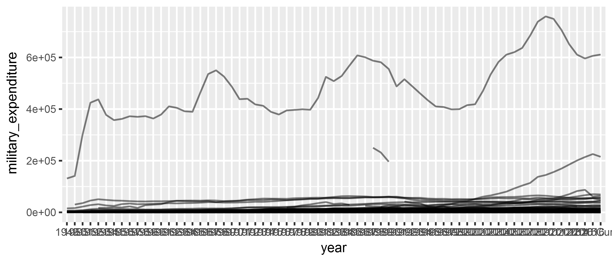

Session 1: Intro, R Refresher, and Code Organization
Introduction - Me
Felix Haass
ABI Freiburg / GIGA Hamburg
Political economy; conflict, democratization, United Nations
Introduction - You
Briefly introduce yourself!
Your Name
Your Research
Your Motivation for Participation in the Workshop
Learning Objectives
- Learn principles of how to use the
ggplot2package to create informative data visualizations
- We will learn mechanics of the software package, rather than good visualization principles. For infos on that, see course page (watch out for the dataviz ninja, though!).
- Know where to find help
Course Principles
- Ask questions at any time!
- Collaborate with your neighbours!
- Individual preferences/data visualization problems are most welcome!
You're doing it right if you get frustrated: if you're not frustrated, you're (probably) not stretching yourself mentally
— Hadley Wickham (@hadleywickham) 11. Februar 2015
Outline of the Course
| Time | Topic |
|---|---|
| 9.30-10.00 | Session 1: Introduction and R refresher |
| 10.00-10.30 | Session 1 continued: Reading data, project organization |
| 10.30-10.45 | Coffee Break |
| 10.45-12.15 | Session 2: The logic of a grammar of graphics & its implementation in ggplot2 |
| 12.15-13.15 | Lunch Break |
| 13.15-14.45 | Session 3: Use-Cases I - Facets and small multiples; sorting facets |
| 14.45-15.00 | Coffee Break |
| 15.00-16.00 | Session 4: Use-Case II - Coefficient plots |
| 16.00-17.00 | Session 5: Wrap-up - Exporting plots; questions; where to get help |
R Refresher - What is R?
Ris a programming language for statistical analysis- “Programming language”: repeat tedious tasks; replicability; connect to unusual data sources (Twitter, web sites, text documents, …)
- “statistical analysis”: many packages to do any statistical analysis you want
RStudiois the interactive software with which we write and execute R code, plot things, view the R memory environment (…and much more)
R Refresher - Libraries
R uses different libraries or packages to load specific functions (read excel files, talk to Twitter, generate plots, …): https://cran.r-project.org/. You load a package or a library with the command
library(read_excel) # read_excel is the package name (without quotation marks)If a command throws an error, chances are you either
- forgot to load the respective library
- have a syntax error - R is case sensitive!
To install a package we use:
install.packages("gapminder") # with quotation marks!R Refresher - Assignment
In R, we assign stuff (numbers, characters, data frames) to things (objects)
url <- "http://gmi.bicc.de/index.php?page=ranking-table"url: object, in this case: a character vector"http://gmi.bicc.de/index.php?page=ranking-table": “stuff” (URL, could be any text or number)
<-: assign command, type<and-(shortcut: alt + - in RStudio)
R Refresher - Objects
In R, everything is an object–and you can have multiple objects in your memory at the same time!
# 1st object: assign numbers to a vector
numbers <- 1:5
# 2nd object: read data from an excel sheet
sipri <- read_excel("./data/SIPRI-Milex-data-1949-2016_cleaned.xlsx",
sheet = 5,
na = c("xxx", ". ."))Executing this command yields to objects in memory, numbers the vector of numbers and the data frame sipri.
R Refresher - Data Frames
Data frames are rectangular data tables, like an Excel spreadsheet.
library(gapminder)
library(tidyverse)
gapminder## # A tibble: 1,704 x 6
## country continent year lifeExp pop gdpPercap
## <fctr> <fctr> <int> <dbl> <int> <dbl>
## 1 Afghanistan Asia 1952 28.8 8425333 779
## 2 Afghanistan Asia 1957 30.3 9240934 821
## 3 Afghanistan Asia 1962 32.0 10267083 853
## 4 Afghanistan Asia 1967 34.0 11537966 836
## 5 Afghanistan Asia 1972 36.1 13079460 740
## 6 Afghanistan Asia 1977 38.4 14880372 786
## 7 Afghanistan Asia 1982 39.9 12881816 978
## 8 Afghanistan Asia 1987 40.8 13867957 852
## 9 Afghanistan Asia 1992 41.7 16317921 649
## 10 Afghanistan Asia 1997 41.8 22227415 635
## # ... with 1,694 more rowsReview: R Refresher
- Libraries are your friend!
library()(load) them orinstall.packages()them! - Assign stuff. Use
<-for assignments! - Multiple objects can and should exist in memory (if you lose track of the objects you’re juggling with, check the environemnt panel at the upper right of RStudio)
- Data frames are the most important type of object. Don’t stop until you have your data in a data frame (check data type with
class())! - Bonus tip: use the help function
help(command_name)if you can’t remember a command’s options.
Organizing your Code
Having a structured way to organize your R code is useful for reproducibility (and your future sanity!)
There are two ways to improve your R code organization:
- Folder Structure
- RStudio Projects
Organizing your Code: Folder Structure
A useful way to organize your project folders:
project_name/ # name of your project
|-- code/ # here go all the .R script files
|-- data/ # here's your data
| |-- input/ # raw input data file (experimental results, existing datasets)
|-- output/ # transformed and cleaned datasets for analysis
|-- manuscript/ # your manuscript, i.e. .docx or LaTeX files
|-- figures/ # your figures as separate files
|-- output/ # tables
Organizing your Code: RStudio Projects
An RStudio project takes care of several useful steps in your project. When you load an RStudio project, the following steps are taken:
- Sets the working directory to the project directory
- A new R session (process) is started (with no libraries)
- Previously edited source documents are restored into editor tabs
- Other RStudio settings (e.g. active tabs, splitter positions, etc.) are restored to where they were the last time the project was closed.
- […and others, see https://support.rstudio.com/hc/en-us/articles/200526207-Using-Projects]
Organizing your Code: Setting up an RStudio Project
In RStudio, go to File => New Project => “Existing Directory”
)
Reading Data
To read .csv files, the the read_csv() function in the readr package is useful (automatically loaded through library(tidyverse)).
To read Excel files, use the read_excel() function from the readxl package, which needs to be loaded separately.
To read files from Stata or SPSS, use read_dta() or read_spss() from the haven package, which needs to be loaded separately.
Example:
library(tidyverse)
library(readxl)
sipri <- read_excel("./data/SIPRI-Milex-data-1949-2016_cleaned.xlsx",
sheet = 5, na = c("xxx", ". ."))To read R files (.rda or .rdata), simply use load("name_of_my_file.rda")
Also useful: the rio package!
Exercise
- Create organized folder structure
- Download the SIPRI data from the course website
- Create an R script to read the data (hint: remember that the Excel file has several sheets!)
Solution
library(tidyverse)
library(readxl)## Warning: package 'readxl' was built under R version 3.4.3sipri <- read_excel("./data/SIPRI-Milex-data-1949-2016_cleaned.xlsx",
sheet = 5, na = c("xxx", ". ."))
sipri_plot <- sipri %>%
# from wide to long format with the `gather function
gather(key = year,
value = military_expenditure,
-Country) %>%
ggplot(., aes(x = year,
y = military_expenditure,
group = Country)) +
geom_line(alpha = 0.5)Solution
print(sipri_plot)